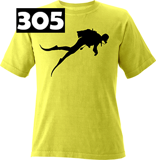
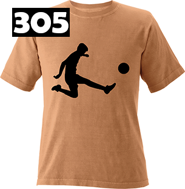

Great Graphics Meet Field Tested Moisture Wicking Tees
Welcome to Silhouet-Tees. We have merged our test of time outdoor graphics with top quality moisture wicking apparel and trend forward printing technologies. Our destination graphics touch the pulse and passion of a wide spectrum of outdoor enthusiasts. Our garments are manufactured with performance, comfort and function in mind. Our printing processes almost exclusively utilize water based inks and all are environment friendly. Our products are phthalate free and in compliance with Consumer Product Safety Commission (CPSC) Standards.


Men's Xtra-long Tees
Shop Men's Xtra-long Tees
Women's Tanks
Shop Women's Tanks
Women's Tees
Shop Women's Tees